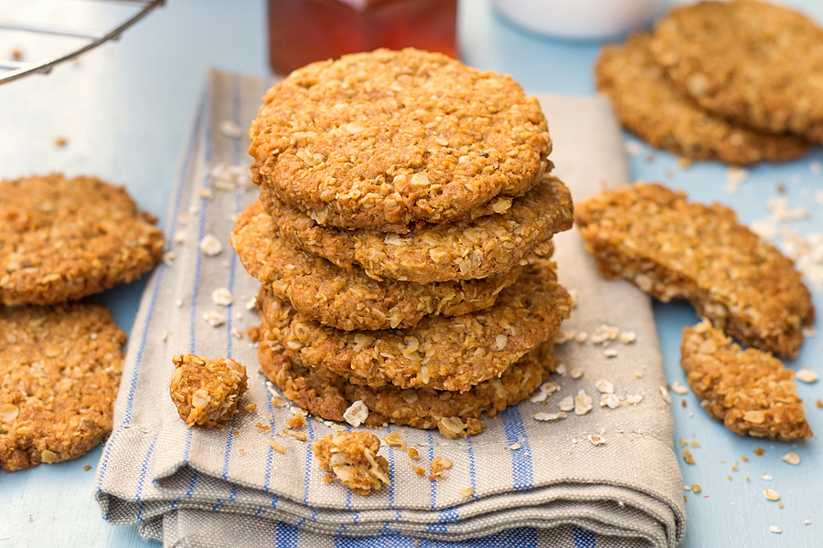

Ingredients
- 1 cup rolled oats
- 1 cup plain flour
- ⅓ cup sugar
- 2 tablespoons golden syrup
- ½ teaspoon bicarb soda
- ½ cup coconut
- 125g margarine
- 1 tablespoon boiling water
Method
- Method Preheat oven to 180◦C.
- Place oats, sugar and coconut into a large bowl, sift in the plain flour.
- In a separate bowl, melt margarine and golden syrup in the microwave.
- Combine the boiling water and bicarb soda, mix well.
- Add to margarine and mix well.
- Add those ingredients to the flour mixture.
- Combine well Place a sheet of baking paper on a baking tray.
- Roll small balls of mixture and space out on the baking tray as they will expand.
- It should make approx 9-10 biscuits.
- Press the tops with the back of a fork to flatten slightly.
- Bake for approximately 15 mins or until lightly golden.
- Allow to cool on trays before removing.
Finished product

Video tutorial